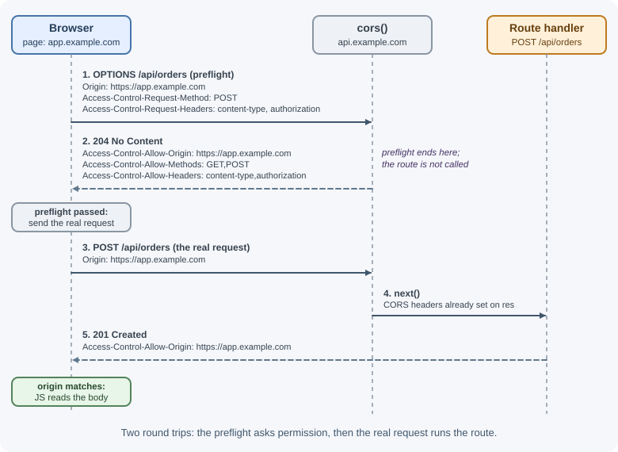
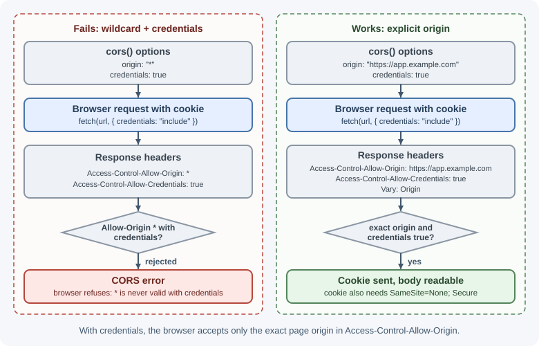
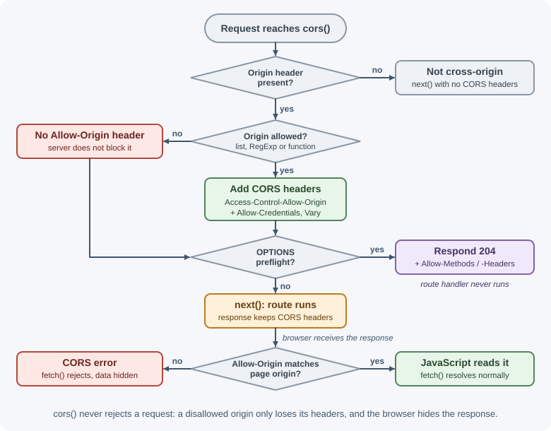

Configuring CORS in Express¶
CORS (Cross-Origin Resource Sharing) is how a server tells browsers which
other websites may call it from JavaScript. In Express, CORS is usually
configured with the cors middleware package. This lesson shows how to
configure it correctly; the underlying browser rules are explained in
CORS concepts.
Why it matters¶
A typical setup has a frontend at https://app.example.com calling an API
at https://api.example.com. Those are different origins, so the
browser blocks the frontend from reading API responses unless the API
sends the right CORS headers. Misconfigured CORS either breaks the
frontend with confusing console errors or, if opened too widely with
credentials, lets malicious sites make authenticated requests on a user's
behalf and read the results.
Real-world usage¶
- GitHub's REST API "supports cross-origin resource sharing (CORS) for
AJAX requests from any origin". Its documented responses use
Access-Control-Allow-Origin: *, allow theAuthorizationheader in preflights, cache preflights for a day (Access-Control-Max-Age: 86400), and expose headers such asETag,Link, and the rate-limit headers to JavaScript (GitHub documentation). A wildcard origin cannot be combined with cookies, so browser callers authenticate with a token they send themselves. - Amazon S3 lets you attach a CORS configuration to a bucket. AWS's own
example is a website hosted in a bucket whose JavaScript needs to make
authenticated
GETandPUTrequests to the bucket's S3 API endpoint, which the browser would otherwise block (AWS documentation). - Amazon API Gateway documents that with a Lambda proxy or HTTP proxy integration, "your backend is responsible for returning the Access-Control-Allow-Origin, Access-Control-Allow-Methods, and Access-Control-Allow-Headers headers". An Express app behind such a gateway therefore still needs its own CORS middleware (AWS documentation).
- Google Cloud Storage recommends CORS when "you want your website to fetch files, images, or scripts directly from a Cloud Storage bucket using a browser-based request", configured on the bucket (Google Cloud documentation).
Popular tools and providers: the cors npm package, reverse proxies
such as Nginx, API gateways, and CDN or storage settings for static assets.
How it works¶
A quick recap¶
- An origin is scheme + host + port:
https://app.example.com:443. - Browsers enforce the same-origin policy: a page's JavaScript cannot read responses from another origin unless that origin allows it.
- The server allows it with response headers such as
Access-Control-Allow-Origin. - For "non-simple" requests (for example
PUT,DELETE, JSON bodies, or anAuthorizationheader), the browser first sends a preflightOPTIONSrequest to ask permission.

The cors package defaults¶
npm install cors
import cors from "cors";
app.use(cors()); // allow every origin
With no options, cors() sends Access-Control-Allow-Origin: *, allows
the methods GET, HEAD, PUT, PATCH, POST, DELETE, reflects whatever
request headers the preflight asks for, and answers preflight requests
with 204. That is fine for a truly public, read-only API that uses no
cookies, but too open for most applications.
Options¶
| Option | Type | Meaning |
|---|---|---|
origin |
Boolean, string, RegExp, array, or function | Which origins are allowed (see below) |
methods |
String or array | Value of Access-Control-Allow-Methods |
allowedHeaders |
String or array | Request headers the browser may send; defaults to reflecting the preflight's Access-Control-Request-Headers |
exposedHeaders |
String or array | Response headers JavaScript may read beyond the safe defaults (for example X-Total-Count) |
credentials |
Boolean | Send Access-Control-Allow-Credentials: true so cookies and auth headers work |
maxAge |
Number (seconds) | How long browsers may cache the preflight result |
preflightContinue |
Boolean | false (default): cors ends preflight itself; true: pass it to your own OPTIONS handler |
optionsSuccessStatus |
Number | Status for successful preflights; default 204 (some very old clients need 200) |
Forms of the origin option¶
| Value | Behavior |
|---|---|
"*" or omitted |
Access-Control-Allow-Origin: * for every request |
true |
Reflect the request's Origin back (allows anyone, including with credentials: dangerous) |
false |
Disable CORS headers |
"https://app.example.com" |
Always send that one origin |
["https://a.example.com", "https://b.example.com"] |
Reflect the origin only if it is in the list |
/\.example\.com$/ |
Reflect the origin if it matches the RegExp |
(origin, callback) => { ... } |
Decide dynamically; call callback(null, true) to allow or callback(null, false) to deny |
Whenever origin is anything other than "*", including a single fixed
string, the package adds Vary: Origin so caches do not serve one
origin's response to another.
Credentials need an explicit origin¶
When the frontend sends cookies (fetch(url, { credentials: "include" }))
or the API relies on cookies for sessions, browsers require:
Access-Control-Allow-Credentials: true, andAccess-Control-Allow-Originset to the exact origin, not*.
app.use(cors({
origin: "https://app.example.com",
credentials: true,
}));

CORS and cookie rules are separate checks. app.example.com and
api.example.com are different origins but the same site, so a cookie
with SameSite=Lax is still sent. If the frontend and API are on
different sites (for example app.example.com and api.example.net), the
cookie also needs SameSite=None; Secure, and some browsers block or
partition such third-party cookies regardless. See
cookies and sessions.
Preflight handling¶
Registered with app.use(), the cors middleware runs for every method,
including OPTIONS, so it answers preflights for all routes before any
route or authentication middleware sees them. That is the simplest and
most reliable setup. The flowchart shows the whole decision cors() makes
for each request.

If you only enable CORS on specific routes, the preflight for that path must also get CORS headers:
const partnerCors = cors({ origin: "https://partner.example.com" });
app.options("/api/partner/orders", partnerCors); // preflight
app.post("/api/partner/orders", partnerCors, createPartnerOrder);
To answer preflights for every path explicitly in Express 5, use the new
wildcard syntax, app.options("/{*splat}", cors(options)); Express 4
tutorials show app.options("*", ...), which Express 5 rejects.
CORS protects browsers, not your server¶
CORS is enforced by browsers. curl, Postman, mobile apps, and other
servers ignore it completely and can call your API regardless of your
CORS settings. CORS is therefore not authentication or access
control. Protect data with authentication, authorization, and rate
limiting; use CORS only to decide which browser-based frontends may read
responses.
When to use and when not to use¶
Enable CORS when browser JavaScript served from one origin must read
responses from your API on another origin: a frontend on
app.example.com calling api.example.com, a public browser-callable
API, or a widget embedded on customers' sites.
Do not enable it when:
- Only servers, mobile apps, or command-line tools call the API. They do not enforce CORS, so the headers add nothing.
- You can serve the frontend and API from the same origin (for example
example.comandexample.com/apithrough a reverse proxy). Same-origin requests need no CORS at all. - You are trying to restrict who can call the API. That needs authentication and authorization, not CORS.
| Approach | Use when | Watch out for |
|---|---|---|
cors package in Express |
The app decides allowed origins, possibly per route | Register it before authentication and routes |
| Manual middleware | You need behavior the package lacks | Remember Vary: Origin and preflight handling |
| Reverse proxy or API gateway headers | Several services share one CORS policy at the edge | Do not also add headers in Express (duplicate values) |
| Same-origin hosting via a proxy | You control both frontend and API deployment | Needs routing configuration in the proxy |
| Dev-server proxy (for example Vite) | Local development only | Production still needs a real solution |
Practical examples¶
A dynamic allowlist from configuration¶
import cors from "cors";
// e.g. CORS_ORIGINS="https://app.example.com,https://admin.example.com"
const allowedOrigins = new Set(
(process.env.CORS_ORIGINS ?? "").split(",").map((o) => o.trim()).filter(Boolean),
);
const corsOptions = {
origin(origin, callback) {
// No Origin header: same-origin requests, curl, server-to-server
if (!origin) return callback(null, true);
callback(null, allowedOrigins.has(origin)); // false -> no CORS headers sent
},
credentials: true,
methods: ["GET", "POST", "PUT", "PATCH", "DELETE"],
allowedHeaders: ["Content-Type", "Authorization", "X-Request-Id"],
exposedHeaders: ["X-Total-Count", "X-Request-Id"],
maxAge: 600, // cache preflight results for 10 minutes
};
app.use(cors(corsOptions)); // before routes and before auth middleware
Denying with callback(null, false) omits the CORS headers, so the
browser blocks the response. The cors middleware then calls next(),
so the request, including a preflight OPTIONS, continues to your other
middleware and routes; a denied preflight therefore gets whatever they
answer (often 401 or 404). Passing an Error to the callback instead
sends it to your error handler, which would turn a CORS mismatch into a
500.
Keep development origins such as http://localhost:5173 in the
development configuration only.
A manual CORS middleware¶
Writing it by hand shows what the package does:
const ALLOWED = new Set(["https://app.example.com"]);
function manualCors(req, res, next) {
const origin = req.get("Origin");
if (origin && ALLOWED.has(origin)) {
res.set("Access-Control-Allow-Origin", origin);
res.set("Access-Control-Allow-Credentials", "true");
}
// The response differs by Origin, so shared caches must key on it
res.append("Vary", "Origin");
if (req.method === "OPTIONS") {
res.set("Access-Control-Allow-Methods", "GET,POST,PUT,PATCH,DELETE");
res.set("Access-Control-Allow-Headers", "Content-Type,Authorization");
res.set("Access-Control-Max-Age", "600");
return res.sendStatus(204); // end the preflight here
}
next();
}
app.use(manualCors);
Checking headers with curl¶
curl -i -X OPTIONS http://localhost:3000/api/orders \
-H "Origin: https://app.example.com" \
-H "Access-Control-Request-Method: POST" \
-H "Access-Control-Request-Headers: content-type,authorization"
# HTTP/1.1 204 No Content
# Access-Control-Allow-Origin: https://app.example.com
# Vary: Origin
# Access-Control-Allow-Credentials: true
# Access-Control-Allow-Methods: GET,POST,PUT,PATCH,DELETE
# Access-Control-Allow-Headers: Content-Type,Authorization,X-Request-Id
# Access-Control-Max-Age: 600
# Access-Control-Expose-Headers: X-Total-Count,X-Request-Id
# (other headers such as Date and Connection omitted)
Common browser errors and fixes¶
| Browser console message (paraphrased) | Usual cause | Fix |
|---|---|---|
No Access-Control-Allow-Origin header is present |
cors not registered, registered after the route, origin not in the allowlist, or the request failed before cors ran (crash, proxy error page) | Register cors first; check the allowlist; check server logs for errors |
Allow-Origin must not be * when credentials mode is "include" |
credentials: true with a wildcard origin |
Set an explicit origin or an allowlist |
| Response to preflight does not have HTTP ok status | OPTIONS hit a 404, or auth middleware returned 401 for the preflight |
Register cors before auth and routes; make sure OPTIONS reaches it |
Request header authorization is not allowed by Access-Control-Allow-Headers |
Header missing from allowedHeaders |
Add the header to allowedHeaders |
Method PUT is not allowed by Access-Control-Allow-Methods |
Method missing from methods |
Add the method |
| Allow-Origin header contains multiple values | Both the proxy (for example Nginx) and Express add CORS headers | Configure CORS in one place only |
| JavaScript cannot read a custom response header | Header not exposed | Add it to exposedHeaders |
| Cookies are not sent or not saved | Missing credentials: "include" on fetch, or (for a cross-site API only) the cookie lacks SameSite=None; Secure |
Fix the client option and cookie attributes |
Tip
During local development, a frontend dev-server proxy (for example
Vite's server.proxy) makes API calls same-origin and avoids CORS
entirely. Production still needs correct CORS if the origins differ.
Best practices¶
- Use an explicit allowlist of origins loaded from configuration.
- Never combine
origin: true(reflect any origin) withcredentials: true. - Register cors early, before authentication middleware and routes.
- Allow only the methods and headers your frontend actually uses.
- Expose only the response headers the frontend needs to read.
- Set
maxAgeto reduce repeated preflight requests. - Configure CORS in one layer (app or proxy), not both.
- Remember that CORS does not secure the API; authentication does.
In production¶
- Preflights rejected by authentication. Symptom: every
non-simple request from the frontend fails while
curlworks. Detect: access logs showOPTIONSrequests answered with401or404; the browser console says the preflight response does not have an HTTP ok status. Cause: cors registered after authentication or routes, or the origin is missing from the allowlist (a denied preflight falls through to the rest of the app). Fix: register cors first and check the origin list. - "Multiple values" in
Access-Control-Allow-Origin. Symptom: CORS breaks right after a proxy change. Detect: the response carries the header twice, or with two comma-separated origins. Cause: both Nginx (or an API gateway) and Express add CORS headers. Fix: configure CORS in exactly one layer. - Intermittent CORS errors behind a CDN. Symptom: the API works for
one frontend and fails for another, depending on which one hit the cache
first. Detect: cached responses carry an
Access-Control-Allow-Originfor the wrong origin. Cause: a hand-written CORS middleware that reflects the origin withoutVary: Origin. Fix: always sendVary: Originwhen the header varies, or exclude those responses from shared caches. - Server errors reported as CORS errors. Symptom: the browser shows
"No
Access-Control-Allow-Originheader" for one endpoint. Detect: server logs show a 500 or a crash, or the proxy returned its own 502 page, for the same request. Cause: the failing response never passed through the cors middleware. When cors is registered first, errors that Express handles keep its headers, so the usual culprits are crashes, timeouts, and proxy error pages. Fix: fix the underlying server or proxy error rather than the CORS configuration. - A new frontend domain is blocked after launch. Symptom: the new
site cannot call the API on launch day. Detect: CORS errors only for
requests whose
Originis the new domain. Cause: the allowlist in the environment configuration was not updated. Fix: add the origin to configuration (for exampleCORS_ORIGINS) and include it in the release checklist.
Important terminology¶
- Origin: The combination of scheme, host, and port of a URL.
- Same-origin policy: The browser rule that restricts reading responses from other origins.
- Preflight request: An automatic
OPTIONSrequest the browser sends to ask whether a cross-origin request is allowed. - Simple request: A cross-origin request that meets conditions allowing it to be sent without a preflight.
- Credentialed request: A request that includes cookies or HTTP authentication.
- Allowlist: The explicit set of origins permitted to call the API.
Vary: Origin: A header telling caches that the response depends on the request'sOrigin.
Common mistakes and misconceptions¶
- Believing CORS stops attackers from calling the API; it only constrains browsers.
- Using
app.use(cors())with cookie-based sessions; credentials require an explicit origin. - Putting authentication middleware before cors, so preflights get 401.
- Using Express 4's
app.options("*", ...)in Express 5. - Fixing a CORS error by disabling browser security instead of fixing the server headers.
- Reading a "CORS error" in the console when the real problem is a 500 response that lacked CORS headers; check the server logs.
- Adding CORS headers in both Nginx and Express.
Revision questions¶
- Why do
https://app.example.comandhttps://api.example.comcount as different origins? - What does a preflight request ask, and which headers answer it?
- Why can't
Access-Control-Allow-Origin: *be used with credentials? - When should you use a function for the
originoption? - Why must cors run before authentication middleware?
- Why is CORS not a substitute for authentication?